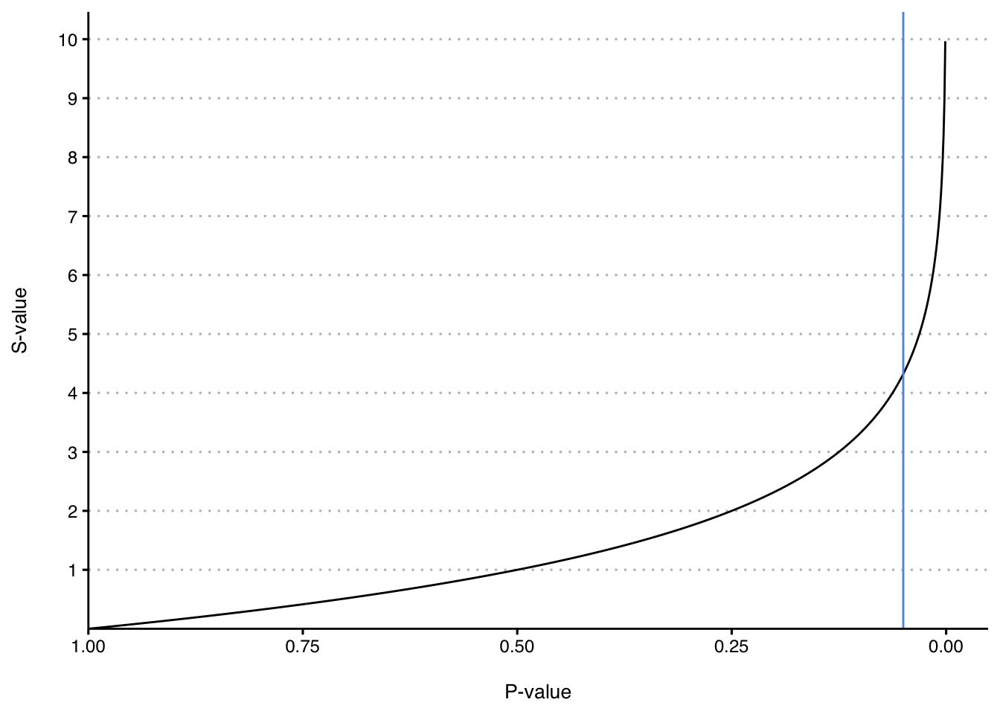
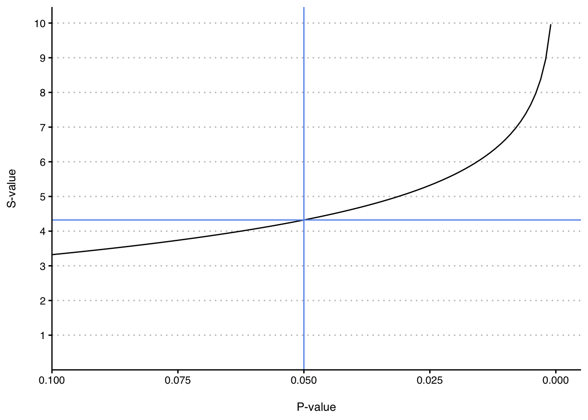

S-Values - Part 1
Calibrate your intuition about p-values
Statistics & Heuristics
Introduction
Imaging you find a coin on the ground. Ever the thrifty type, you are delighted to find this treasure, so you pick it up and give it three celebratory flips. You notice it lands on heads after each flip, so you decide to give it one more. It lands on heads again! You do quick mental math and decide that the probability of getting four heads in a row if the coin is fair is \(\frac{1}{16}\). Curious, but not impossible. You give it another flip. Heads. You get more suspicious. Another flip. Heads! Now you’re fairly confident something funny is going on with the coin. You continue to flip and get heads until you feel your level of confidence that you found a trick coin reaches some level of certainty, at which point your confidence grows no further and you begin to expect heads with each flip.
Ready for the big reveal in this story? What you actually encountered while walking down that street is a p-value!
Yes, THAT p-value. The one where we try really hard to have values less than 0.05 so that you we can imbue our research with the authority of statistics and have it published. The reason why the situation doesn’t look like a p-value is because it is mathematically transformed and conceptually situated away from the context where you normally encounter it, in journal articles usually accompanied by stars (***) and hyperbolic causal conclusions (although more research is necessary). The version of the p-value in this story is called an s-value, and it is an incredibly helpful tool to build intuition about what p-values mean. The best part is that s-values will help you more accurately interpret p-values while doing almost no math!
S-values
Mathematically an s-value is defined as \(s = -log_2(p)\) (the mathematical details of the development of this transformation are outside the scope of this post, but you can see Cole, Edwards, and Greenland (2021) for a more robust discussion). The result of this transformation can be interpreted as saying, “if I were to flip a fair coin s times, I would expect to get heads on all flips with probability p.” For example, if I flip a fair coin and get heads 4 times in a row, that corresponds to a probability of getting that outcome of 0.06 . Another way to phrase this: if I did 100 trials of 4 coin flips, only 6 would result in 4 heads. This transformation also works if we start with probability. If I tell you that I saw someone flip a coin and get heads each time and that the probability of this outcome using a fair coin was only around 0.01, you could plug it into the equation tell me that probability corresponds to roughly 7 heads in a row (with rounding because fraction of coin flips are hard to visualize).
An s-value can also be described as a measure of surprise that you feel when flipping a coin that you expect to be fair and seeing it land on heads some number of times in a row. Yes, it is best described as a feeling. Your brain and your body have been tuned to create expectations of outcomes. When an outcome happens that defies your expectations, you feel surprised! The surprise in coin flipping is that you expect some mixture of heads and tails, but when only heads keeps coming up, that violation of your expectation creates a feeling of surprise. Another way to say it is that s-values quantify your feeling of surprise when your data and your expectation about a hypothesis about a binary outcome do not match. The hypothesis in the coin flipping example is that the coin is fair. Amazingly, this scenario can teach us about p-values because feeling surprised at a mismatch between a hypothesis and data applies to any situation where p-values are used to reason about a hypothesis.
Example
We will work through an example and then explore some very useful properties of s-values.
Let’s say we read a journal article where the researchers claimed to have surveyed a random sample of 120 people and found that more people prefer cats to dogs and reported the difference with p= 0.045. Under the Null Hypothesis Significance Testing methods, the p-value is telling you is that if we live in a world where people do not in fact have a preference between cats or dogs, we would expect to see the difference that was reported in this study or a more extreme difference 4.5% of the time. For Reasons, a p-value of less than 0.05 has long been celebrated as the “significance” threshold, which is shorthand for “publishable” and also for “I can extend my life in academia a few more months.”
S-values can help improve our interpretation of this number and move us away from a threshold for significance/publishable/keeping-my-job. For p=0.045, the corresponding s-value is 4.47 which can round down to 4 . This p-value provides roughly the same amount of surprise against the null hypothesis (no difference between cat and dog preferences) as flipping a fair coin and seeing it land on heads 4 times in a row. Is that a lot of evidence against the null hypothesis? It’s something, but it doesn’t feel like a lot.
S-values change slowly until they don’t
One of the most important insights from the s-value perspective is that the difference between a “significant” and “non-significant” finding is very small. Suppose in the cat-dog preference study the p=value was 0.055. That corresponds to an s-value of 4.18 , which again rounds to 4. Although there is a small fractional difference in s-values, the intuition is that both p-values of 0.045 and 0.055 are roughly similar to the surprise you feel when flipping a fair coin and seeing heads 4 times in a row. Why then is a threshold of 0.05 special? It’s not. It’s just one value along a continuum of evidence that corresponds to a continuous amount of surprise against the null hypothesis.
Let’s now consider the possible s-values you could get along the whole range of p-values from 0 to 1. The graph below demonstrates this relationship.
We start with p-values on the x-axis, and with a p-value of 1 on the left because it produces an s-value of 0. Arranging the graph this way demonstrates that evidence against the null hypothesis accumulates as p-values gets smaller. The blue line on the chart represents p=0.05. Notice how slowly the s-values rise over the interval from 1 to 0.25. In this range, an absolute difference of 0.75 on the probability scale corresponds to just two coin tosses/s-value units (technically known as bits). Even though the value of the p-value varies quite a bit in this range, there just isn’t much to make you feel surprised about the null hypothesis that is contained in these numbers. On the right side of the graph you can see that evidence accumulates exponentially as the p-value gets smaller. Let’s zoom in on that region in the graph below.

Here we’re starting on the left with a p-value of 0.1. I’ve added a blue horizontal line to depict the s-value of 4.32 that corresponds to a p-value of 0.05. Zooming in to this area again shows that s-values increase relatively slowly in the region of 0.05 compared to much smaller values on the right. Below is a table of p/s-values in this region to make the increase clear.
| P-Value | S-Value |
|---|---|
| 0.10 | 3.32 |
| 0.09 | 3.47 |
| 0.08 | 3.64 |
| 0.07 | 3.84 |
| 0.06 | 4.06 |
| 0.05 | 4.32 |
| 0.04 | 4.64 |
| 0.03 | 5.06 |
| 0.02 | 5.64 |
| 0.01 | 6.64 |
The graph and table demonstrate that a 0.01 decrease in p-values starting from 0.10 still results in a relatively small incremental increase in s-values. Invoking coin flips again, 3.64 heads in a row with a fair coin (p=0.08) and 4.32 heads in a row (p=0.05) just don’t feel very different. They both round to 4 heads in a row. When I said “a relatively small increase”, I meant relative to the scale of meaningful evidence against the null hypothesis. By the time the p-value is 0.01, the number of heads in a row round to 7, which does feel like a much more surprising result compared to 4 heads in a row.
Notice that as the p-values get smaller, the s-value increase starts to accelerate. Going from p=0.1 to p=0.01 (an absolute difference of 0.09) results in a 3.3 increase in s-values. This is very different than in the range of p-values from 1 to 0.25 (absolute difference of 0.75) that resulted in an increase in s-values of 2. Let’s make this trend clearer in the table below.
| P-Value | S-Value |
|---|---|
| 0.1 | 3.3 |
| 0.01 | 6.6 |
| 0.001 | 10.0 |
| 0.0001 | 13.3 |
| 0.00001 | 16.6 |
This table demonstrates that with small p-values, even though the absolute differences in p-values is shrinking (for example, the difference between 0.01 and 0.001 is 0.009 ), evidence is accumulating much more rapidly. When deciding about evidence against the null, there is a BIG difference between a p-value of 0.1 and 0.01. There is also a BIG difference between 0.01 and 0.001. Even though both of these numbers feel “small,” 0.001 contains 50% more evidence against the null hypothesis than 0.01. Humans are bad about reasoning with small numbers. Once we get to a certain number of decimals, we throw up our hands and think “what’s the difference between small and smaller?” When talking about feelings of surprise against a null hypothesis, the difference is huge because the information lives in these small values, which are the easiest for us humans to overlook!
Conclusion
This post defined s-values and discussed four important tasks that they accomplish.
S-values transform p-values into a measure of surprise against a hypothesis. In this post, we focused primarily on the null hypothesis.
- S-values correspond to the psychologically familiar situation of the surprise that you feel when flipping a coin that you think is fair and getting heads a certain number of times in a row. This builds intuition of how p-values provide evidence against the null hypothesis.
- S-values demonstrate that the magnitude of the absolute difference in p-values do not correspond to the difference in s-values across the range of possible p-values.
- S-values increase slowly over the range of p-values that surround the traditional cutoff values of p=0.05, demonstrating that p-value cutoffs are largely arbitrary and values in this range provide similar feelings of surprise against a null hypothesis.
- The increase in S-values will accelerate as p-values become smaller, demonstrating that information against the hypothesis accumulates in small p-values, contrary to the naive intuition that small absolute differences on the probability scale when the values are small are not overly meaningful.
I hope this discussion is helpful to calibrate your intuition about what p-values signify. See these references below to learn more (Rafi and Greenland 2020; Greenland 2019).
References
Cole, Stephen R, Jessie K Edwards, and Sander Greenland. 2021. “Surprise!” American Journal of Epidemiology 190 (2): 191–93. https://doi.org/10.1093/aje/kwaa136.
Greenland, Sander. 2019. “Valid p-Values Behave Exactly as They Should: Some Misleading Criticisms of p-Values and Their Resolution with s-Values.” The American Statistician 73 (sup1): 106–14. https://doi.org/10.1080/00031305.2018.1529625.
Rafi, Zad, and Sander Greenland. 2020. “Semantic and Cognitive Tools to Aid Statistical Science: Replace Confidence and Significance by Compatibility and Surprise.” BMC Medical Research Methodology 20 (1): 244. https://doi.org/10.1186/s12874-020-01105-9.